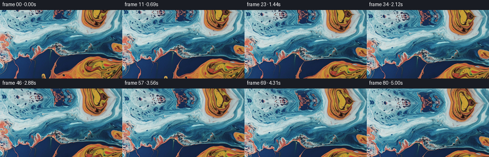
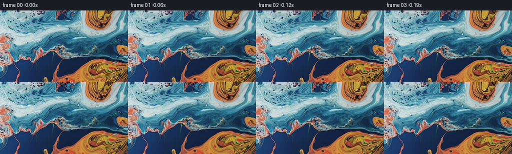

← 本轮 smoke 总览traex/GPT-5.6-Sol · 0003_s4
text · 256×144 · 16.0 FPS · 81 帧 · 状态 running · 输出 tokens None
原始任务a close up of a blue and orange liquid, camera tilts up
当前保存结果
此结果可播放，但该运行尚未通过最终提交审核。页面展示不代表评测通过。
已保存候选与代码修改
这里按时间展示外部捕获的候选，每份均可单独播放。保存新版本不等于完成视觉检查；下方工具证据记录实际看过的图。
候选 01 · 2026-11-09T02:25:26.398975+00:00 · 点开播放与检查图
inspection.png

transition_check.png

代码变化
--- 上一保存版本
+++ 本次保存版本
@@ -0,0 +1,124 @@
+"""Generate a slow upward camera tilt over the supplied macro liquid image.
+
+The source is treated as a continuous sheet of liquid. A mild projective
+camera move is combined with long-wavelength refraction, while a synthesized
+continuation above the photograph supplies the area revealed by the tilt.
+"""
+
+from pathlib import Path
+
+import cv2
+import numpy as np
+from PIL import Image
+
+import artifact_io
+
+
+ROOT = Path(__file__).resolve().parent
+W, H, N = 256, 144, 81
+
+
+def smoothstep(a):
+ a = np.clip(a, 0.0, 1.0)
+ return a * a * (3.0 - 2.0 * a)
+
+
+def generate():
+ source_u8 = np.asarray(Image.open(ROOT / "first_frame.png").convert("RGB"))
+ if source_u8.shape != (H, W, 3):
+ raise ValueError(f"unexpected source size: {source_u8.shape}")
+ source = source_u8.astype(np.float32)
+
+ # Static masks only modulate the tiny refractive component. A broad mask
+ # avoids any visible cut-out motion between the orange and blue liquids.
+ orange = source[..., 0] - 0.78 * source[..., 2] - 24.0
+ orange = np.clip(orange / 90.0, 0.0, 1.0)
+ orange = cv2.GaussianBlur(orange, (0, 0), 12.0)
+
+ yy, xx = np.mgrid[0:H, 0:W].astype(np.float32)
+ cx, cy = (W - 1) * 0.5, (H - 1) * 0.5
+ frames = np.empty((N, H, W, 3), dtype=np.uint8)
+
+ for i in range(N):
+ p = i / (N - 1)
+
+ # A steady 31-pixel vertical reveal is the principal action. The
+ # slight scale/shear is what distinguishes a camera tilt from a plain
+ # two-dimensional slide.
+ shift = 31.0 * (p + 0.025 * np.sin(np.pi * p))
+ yn = (yy - cy) / cy
+ scale_y = 1.0 - 0.026 * p
+ map_y = cy + (yy - cy) * scale_y - shift
+ map_x = cx + (xx - cx) * (1.0 - 0.010 * p - 0.006 * p * yn)
+ map_x += 0.75 * p * yn
+
+ # Slow coherent refraction makes the two fluids feel alive without
+ # fighting the requested camera motion. Subtracting phase zero makes
+ # the first generated mapping exactly the identity.
+ ph1 = 2.0 * np.pi * yy / 91.0
+ ph2 = 2.0 * np.pi * (xx + 0.37 * yy) / 151.0
+ ph3 = 2.0 * np.pi * (xx - 0.22 * yy) / 187.0
+ dx = 1.55 * (np.sin(ph1 + 1.75 * p) - np.sin(ph1))
+ dx += 0.85 * (np.sin(ph2 - 1.10 * p) - np.sin(ph2))
+ dy = 0.72 * (np.sin(ph3 + 1.35 * p) - np.sin(ph3))
+ dy += 0.42 * (np.sin(ph2 + 0.80 * p) - np.sin(ph2))
+ # The denser warm fluid refracts by a fractionally different amount.
+ dx += orange * 0.70 * (np.sin(ph3 - 1.25 * p) - np.sin(ph3))
+ dy += orange * 0.42 * (np.sin(ph1 + 0.95 * p) - np.sin(ph1))
+ map_x += dx
+ map_y += dy
+
+ # Continue the photograph beyond its top edge. At the seam this map
+ # lands exactly on source row zero. Deeper into the reveal it bends a
+ # reflected portion of the same liquid, which retains authentic color,
+ # focus and grain rather than introducing a flat synthetic border.
+ neg = map_y < 0.0
+ d = np.maximum(-map_y, 0.0)
+ bend = smoothstep(d / 28.0)
+
+ map1_y = np.where(
+ neg,
+ d * (0.72 + 0.075 * np.sin((map_x + 17.0) / 42.0)) + 0.006 * d * d,
+ map_y,
+ )
+ map1_x = map_x + neg * (
+ 0.22 * d + 0.11 * d * np.sin((map_x - 11.0) / 31.0)
+ + 1.5 * bend * np.sin(d / 8.5)
+ )
+
+ # A second, lightly mixed transport path removes literal mirror
+ # symmetry in the newly revealed top strip. Its weight is zero at the
+ # boundary, preserving continuity with frame zero.
+ map2_y = np.where(neg, 2.0 + 1.05 * d + 1.4 * np.sin(map_x / 47.0), map_y)
+ map2_x = map_x - neg * (0.31 * d + 2.2 * bend * np.sin((map_x + d) / 38.0))
+ mix = np.where(neg, 0.25 * smoothstep((d - 2.0) / 24.0), 0.0)[..., None]
+
+ # Reflection at the left/right image edge is unobtrusive and needed
+ # only for the subpixel projective shear.
+ a = cv2.remap(
+ source, map1_x.astype(np.float32), map1_y.astype(np.float32),
+ interpolation=cv2.INTER_CUBIC, borderMode=cv2.BORDER_REFLECT_101,
+ )
+ b = cv2.remap(
+ source, map2_x.astype(np.float32), map2_y.astype(np.float32),
+ interpolation=cv2.INTER_CUBIC, borderMode=cv2.BORDER_REFLECT_101,
+ )
+ frame = a * (1.0 - mix) + b * mix
+
+ # Very broad moving illumination reads as soft caustics. It is kept
+ # below two percent so the source palette remains authoritative.
+ light_phase = 2.0 * np.pi * (xx / 211.0 + yy / 173.0)
+ caustic = (
+ np.sin(light_phase + 0.75 * p) - np.sin(light_phase)
+ ) * 0.009
+ frame *= (1.0 + caustic[..., None])
+ frames[i] = np.clip(np.rint(frame), 0, 255).astype(np.uint8)
+
+ # Contractual exact image-to-video start (including all least-significant
+ # pixel values, independent of remap implementation details).
+ frames[0] = source_u8
+ return frames
+
+
+if __name__ == "__main__":
+ artifact_io.save(generate(), ROOT)
可观测工具行为
命令 1 · 2026-11-09T02:23:43.234576+00:00/bin/bash -lc "cat GENERATION_RULES.md && printf '\\n---PROMPT---\\n' && cat prompt.txt"
exit 0 命令 2 · 2026-11-09T02:23:43.657830+00:00/bin/bash -lc "find . -maxdepth 2 -type f -printf '%p\\n' | sort && printf '\\nTOOLS\\n' && command -v ffmpeg && command -v python3"
exit 1 命令 3 · 2026-11-09T02:23:54.583884+00:00/bin/bash -lc "cat task_spec.json; sed -n '1,240p' artifact_io.py"
exit 0 命令 4 · 2026-11-09T02:23:55.194494+00:00/bin/bash -lc "python3 - <<'PY'
from PIL import Image
import numpy as np
im=np.array(Image.open('first_frame.png').convert('RGB'))
print(im.shape,im.dtype, im.min(),im.max())
for c,n in enumerate('RGB'):
a=im[:,:,c]; print(n,'mean',a.mean(),'std',a.std(),'pct',np.percentile(a,[0,1,5,25,50,75,95,99,100]))
# dominant HSV and spatial stats
import colorsys
x=im.reshape(-1,3)/255
hsv=np.array([colorsys.rgb_to_hsv(*p) for p in x])
print('HSV',np.percentile(hsv,[0,10,25,50,75,90,100],axis=0))
# blocks means 12 rows x 16 cols
for yy in range(0,144,18):
print('row',yy, [tuple(im[yy:yy+18,xx:xx+16].mean((0,1)).astype(int)) for xx in range(0,256,16)])
PY"exit 0 命令 5 · 2026-11-09T02:24:08.686878+00:00/bin/bash -lc "python3 - <<'PY'
for x in ['numpy','PIL','scipy','cv2','imageio']:
try:
m=__import__(x); print(x,getattr(m,'__version__','ok'))
except Exception as e: print(x,'NO',e)
PY"
exit 0 命令 6 · 2026-11-09T02:24:08.885284+00:00/bin/bash -lc "python3 - <<'PY'
from PIL import Image
import numpy as np
im=np.array(Image.open('first_frame.png').convert('RGB'))
# Analyze gradients and dominant blue/orange segmentation coarse 8x8: B/o/neutral/highlight
for yy in range(0,144,8):
s=''
for xx in range(0,256,8):
q=im[yy:yy+8,xx:xx+8].mean((0,1)); r,g,b=q
if r>b+30 and r>g+20:s+='O'
elif b>r+30:s+='B'
elif q.mean()>175:s+='*'
elif q.mean()<70:s+='.'
else:s+='-'
print(f'{yy:03} {s}')
PY"exit 0 命令 7 · 2026-11-09T02:25:24.137552+00:00/bin/bash -lc "python3 generate.py && python3 - <<'PY'
import numpy as np
from PIL import Image
f=np.stack([np.asarray(Image.open(f'frames/{i:02}.png')) for i in range(81)])
a=np.asarray(Image.open('first_frame.png').convert('RGB'))
print('shape dtype',f.shape,f.dtype,'first exact',np.array_equal(f[0],a))
d=np.abs(np.diff(f.astype(np.int16),axis=0))
print('adj mean/max/p99',d.mean(),d.max(),np.percentile(d,99))
print('frame vs first MAD',[(i, np.abs(f[i].astype(int)-f[0]).mean()) for i in [1,10,20,40,60,80]])
print('range',f.min(),f.max(),'output files')
PY
ls -lh pixels.npz index.html inspection.png transition_check.png frames/80.png"exit 0 保存候选 1 份；完成命令 7 次；可验证图片返回 0 张。原始 API 响应与完整日志保留在本地。